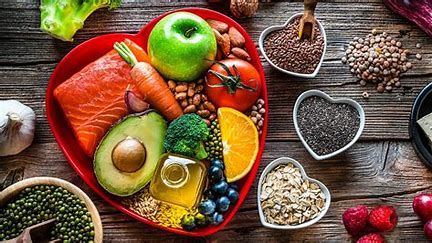
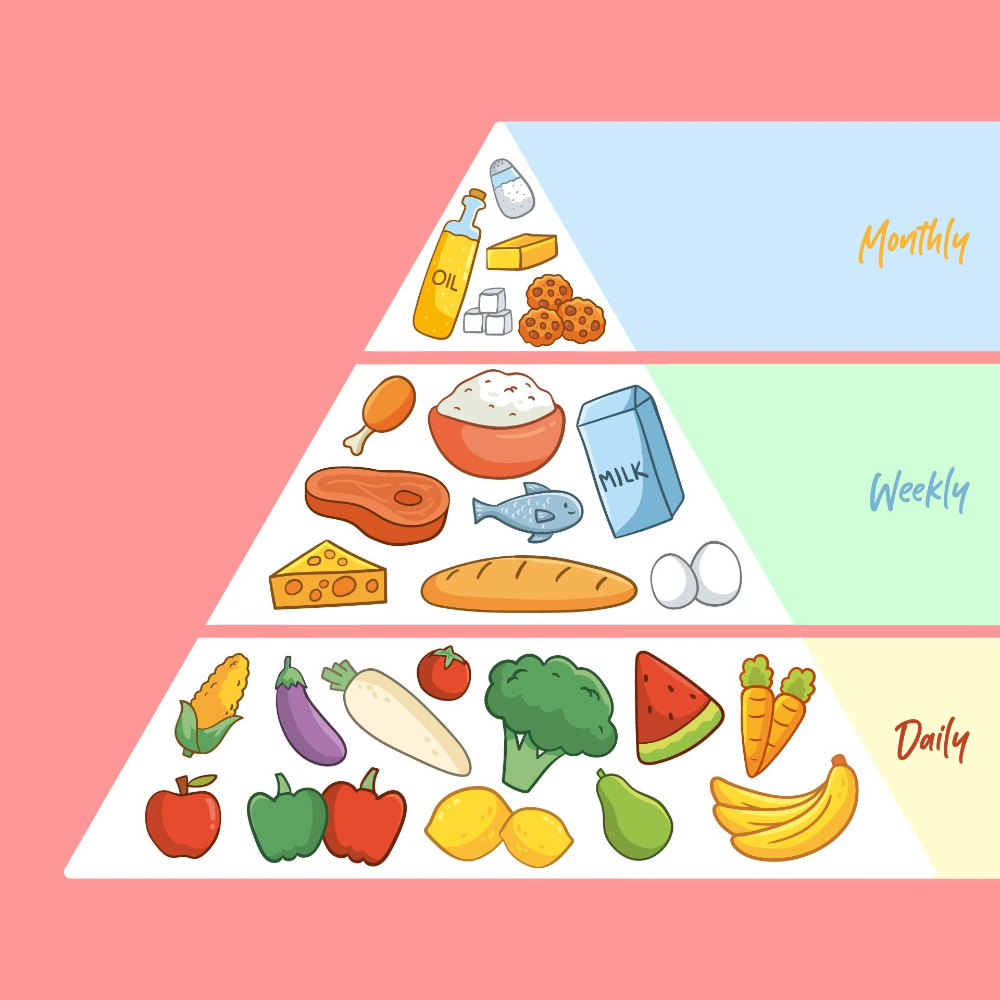
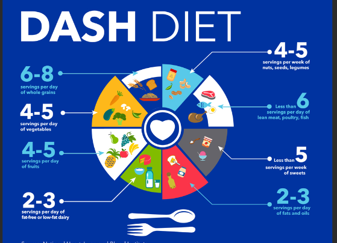
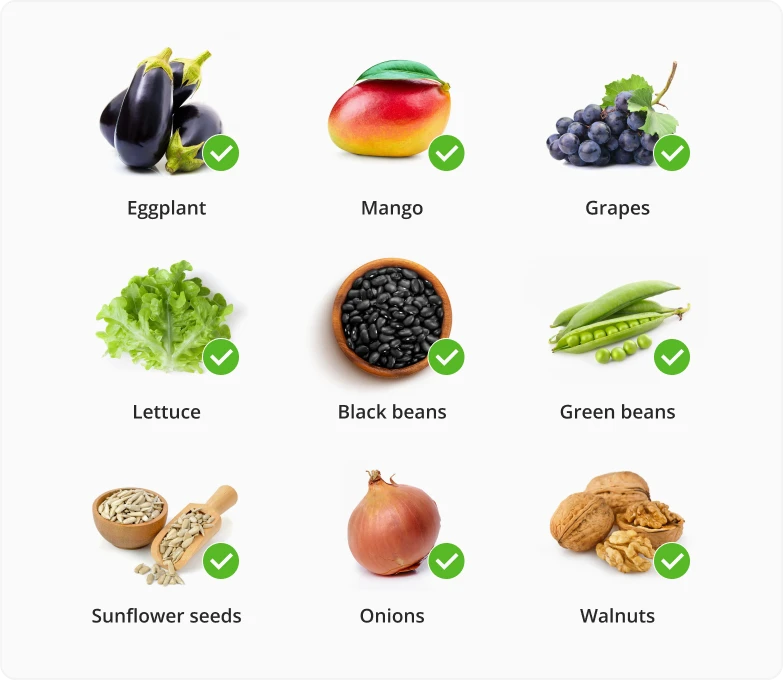
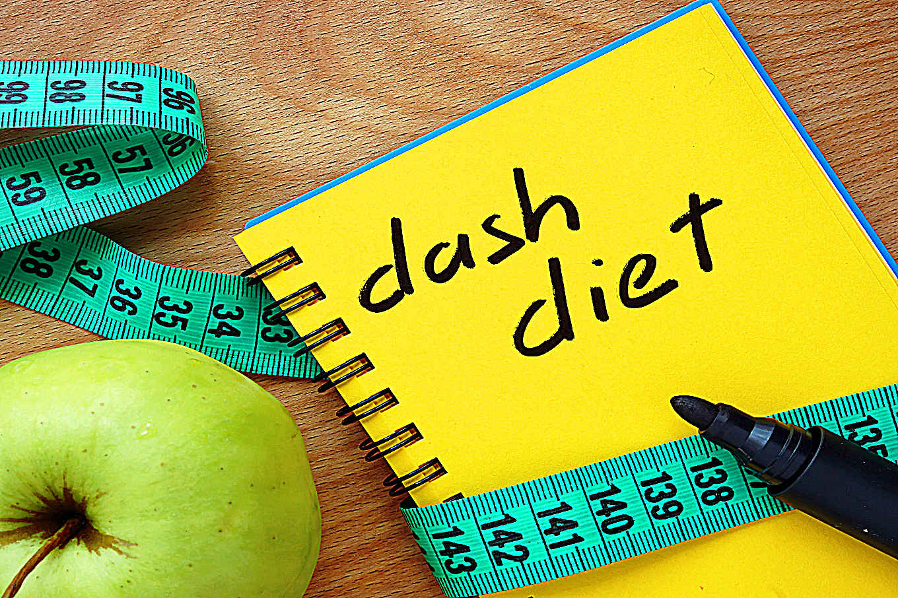
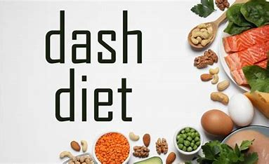

DASH Diet:

Understanding the DASH Diet
Welcome to the world of the DASH diet—a vibrant, delicious
approach to eating that not only tantalizes your taste buds but
also promotes heart health and overall well-being. Whether you're
looking to lower your blood pressure, improve your nutrition, or
just want to eat better, DASH (Dietary Approaches to Stop
Hypertension) has you covered. So, grab a snack (preferably
healthy!) and let’s dive in!
What is the DASH Diet?
At its core, the DASH diet emphasizes wholesome, nutrient-rich
foods that can help you reduce your sodium intake and manage
hypertension (high blood pressure). Developed by the National
Heart, Lung, and Blood Institute (NHLBI), the DASH diet isn't just
about cutting back on salt—it's a lifestyle change that focuses on
eating a balanced diet rich in fruits, vegetables, whole grains,
lean proteins, and healthy fats.
Think of the DASH diet as a colorful plate filled with a variety
of foods. It’s not about deprivation; instead, it’s all about
making healthier choices that you can enjoy. The idea is to
nourish your body while also satisfying your cravings. Sounds
good, right?
How Does the DASH Diet Work?

The DASH diet works by promoting foods that are naturally low in
sodium and high in potassium, calcium, and magnesium—all essential
nutrients for heart health. By incorporating more fruits,
vegetables, whole grains, and low-fat dairy into your meals, you can
naturally lower your blood pressure and improve your cardiovascular
health.
The magic of the DASH diet lies in its flexibility. You can
customize it to fit your personal preferences, making it easier to
stick to in the long run. Plus, it encourages a variety of flavors
and textures, so you’ll never feel bored with your meals!
Scheduling: How to Get Started with DASH

Starting the DASH diet doesn’t have to be overwhelming. Here’s a
simple guide to help you ease into this healthier lifestyle:
-
1. Set Your Goals: Determine what you want to
achieve with the DASH diet—whether it’s lowering blood pressure,
losing weight, or simply eating healthier.
-
2. Plan Your Meals: Start by creating a meal plan
for the week. Include a variety of foods from different food
groups to keep your meals exciting.
-
3. Grocery Shopping: Stock up on DASH-friendly
foods. Make a list to avoid impulse buys that can derail your
healthy eating habits
-
4. Prep Your Meals: Meal prep can save you time
during busy weekdays. Chop veggies, cook grains, and prepare
snacks in advance so you have healthy options ready to go.
-
5. Mindful Eating:Pay attention to portion sizes
and savor each bite. Mindful eating can help you enjoy your food
and recognize when you're full.
-
6. Track your journey: This is where NourishWise
comes in, make sure to log in your daily meals and calorie intake
as often as possible. Tracking your progression, or even
regression, helps to not only keep you motivated and accountable,
but helps you notice any missteps to be able to solve them early.
Foods You Can Eat on the DASH Diet

Embrace the following food groups as part of your DASH journey:
-
1. Fruits and Vegetables: Aim for 4-5 servings of
each per day. Think berries, apples, leafy greens, carrots, and
bell peppers.
-
2. Whole Grains: Choose whole-grain bread, brown
rice, quinoa, and oatmeal. Aim for 6-8 servings a day.
-
3. Lean Proteins: Incorporate fish, poultry,
beans, lentils, and tofu. Aim for 2 or fewer servings of meat per
day.
-
4. Low-Fat Dairy: Enjoy yogurt, milk, and cheese,
aiming for 2-3 servings each day.
-
5. Nuts and Seeds: Snack on unsalted nuts and
seeds, keeping it to about 4-5 servings per week.
-
6. Healthy Fats: Use healthy oils like olive oil,
and limit saturated and trans fats.
Foods to Limit or Avoid

While the DASH diet is about enjoying a variety of foods, there are
some items you should limit or avoid:
-
1. Salt: Aim for no more than 2,300 mg of sodium
per day, or ideally 1,500 mg if you have high blood pressure.
-
2. Added Sugars: Cut back on sugary beverages,
desserts, and processed snacks.
-
3. Red and Processed Meats: Limit these to less
than 6 ounces per week.
-
4. Full-Fat Dairy: Choose low-fat or fat-free
options instead.
-
5. High-Fat and Fried Foods: These can contribute
to higher blood pressure and are best limited.
Fun Tips to Enjoy the DASH Diet

Here are some enjoyable ways to embrace the DASH diet:
-
1. Experiment with Herbs and Spices: Instead of
salt, enhance your dishes with flavorful herbs and spices.
-
2. Join a Cooking Class: Learn new ways to
prepare DASH-friendly meals while having fun.
-
3. Make it Social: Share your DASH journey with
friends and family. Host a healthy potluck or dinner party!
-
4. Keep it Colorful: A colorful plate often means
a variety of nutrients. Aim to eat the rainbow!
Conclusion
Embarking on the DASH diet is about more than just food; it’s a
lifestyle change that can lead to better health and a happier you.
With its focus on whole foods and balanced nutrition, the DASH diet
can help you feel your best while enjoying a diverse array of
delicious meals.
So, what are you waiting for? Dive into the world of DASH, savor
every bite, and watch as you take strides toward a healthier life.
Remember, it’s not just about the destination; it’s about enjoying
the journey along the way!